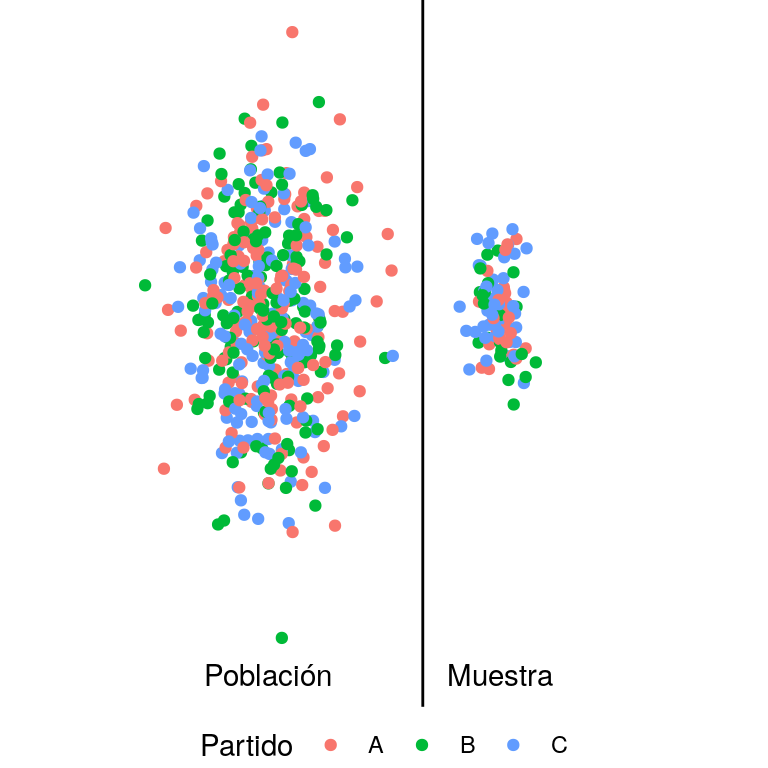
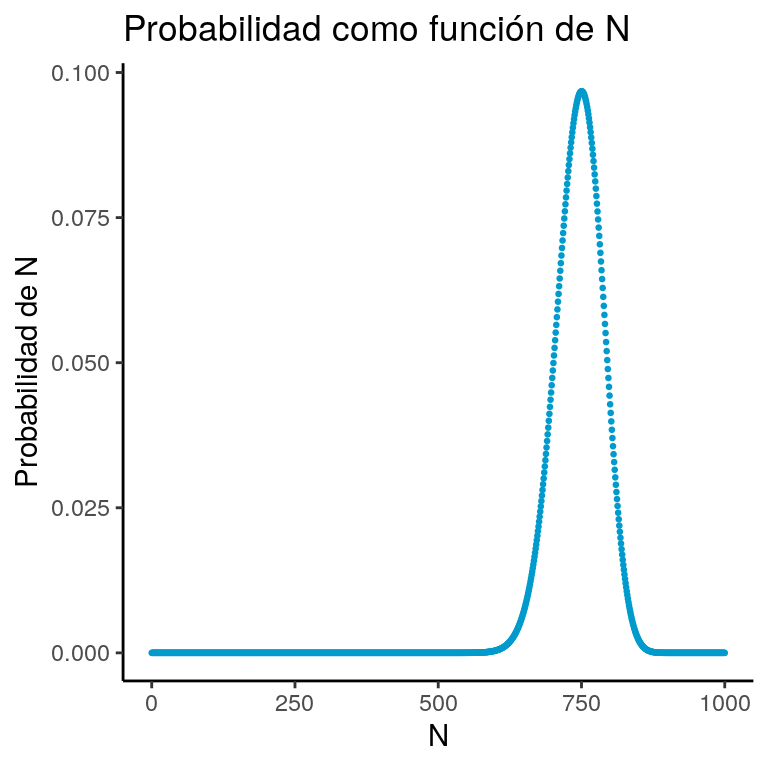
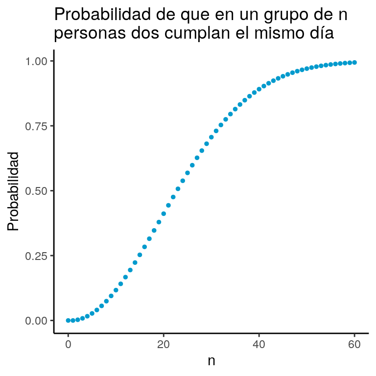
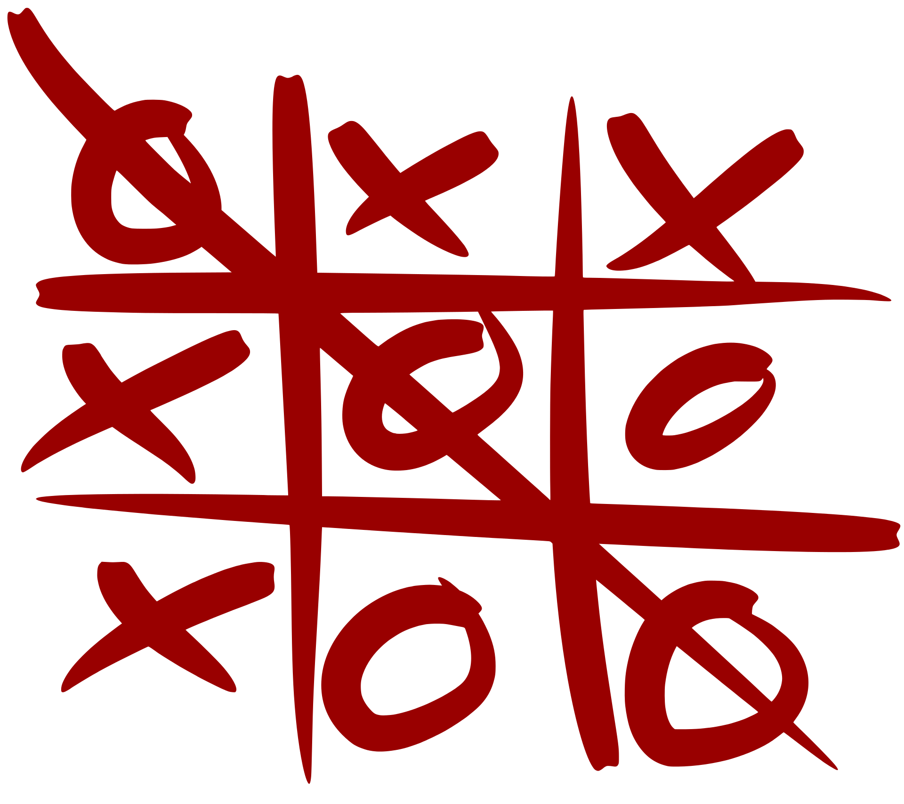
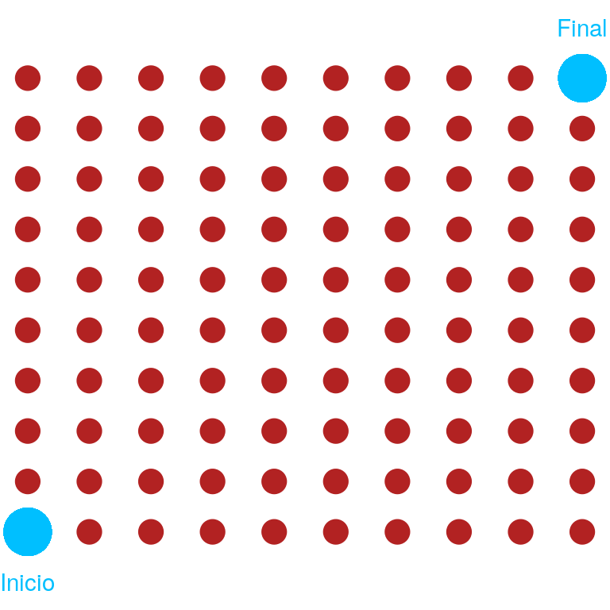
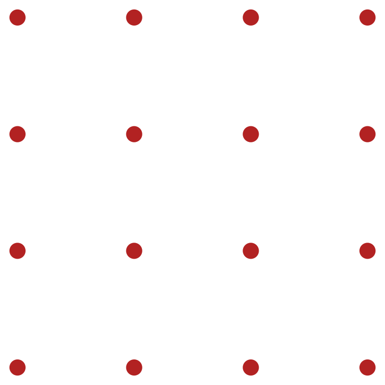

Considera toda la población de México (país). Según la más reciente estimación del INEGI, en 2015 la población del país era de 119,938,473 habitantes. Supongamos que nos interesa hacer una encuesta para saber cuál partido político prefiere cada persona de tal forma que:
Se pueden hacer campañas dirigidas (por ejemplo, si las mujeres jóvenes muestran aversión a nuestro partido, hacer una campaña específica para ellas)
Poder predecir si nuestro partido ganará la elección presidencial o no.
Predecir en qué regiones nuestro partido contará con miembros del congreso y en cuáles no.
Para lograr esto una opción sería salir a la calle y preguntar a todos los habitantes cuál es su partido preferido. Empero, esto es carísimo. ¿Te imaginas la cantidad de tiempo y personas que se requieren?
La idea (bastante antigua1) es tomar un pedazo aleatorio de la población (muestra aleatoria), y asumir que el resto es igual. Si el pedazo fuera lo suficientemente aleatorio podríamos asumir que la proporción de gente que votará por nuestro partido, será la misma en la población total que en nuestra muestra.

Para poder hablar de la muestra vamos a considerar notación:
Por construcción, \(m \leq M\) y, durante estas notas, \(0\not\in\mathbb{N}\). Hay varias preguntas que surgen de este procedimiento:
¿Cómo debe tomarse la muestra?
¿De qué tamaño tiene que ser la muestra para que sean buenas sus predicciones?2
Antes de resolver estas preguntas, repasemos tres de los principios fundamentales de conteo.
El principio de la adición se basa en la siguiente proposición de teoría de conjuntos:
Veamos un ejemplo sencillo de aplicación; la divesión empieza más adelante cuando combinemos con el principio de la multipicación:
El principio de la adición que quizá viste en Álgebra no es nada más que un refraseo del teorema de la cardinalidad de la unión:
Supongamos tenemos tres colores de calcetines: rojos, verdes y amarillos. Y dos colores de zapatos: negros y cafés. ¿Cuántas formas tenemos de decorar nuestros pies3?
Para ello podemos plantear el problema como un árbol de decisión:
Observa que tenemos \(2\) opciones de zapatos y a cada una le podemos poner \(3\) opciones de calcetines. En total, tenemos \(2 \times 3 = 6\) opciones a elegir. Si queremos traducir esto a teoría de conjuntos podemos considerar un conjunto de zapatos: \(Z = \{ \text{Negro}, \text{Café} \}\) y un conjunto de calcetines \(C = \{ \text{Rojo}, \text{Amarillo}, \text{Verde} \}\). Al generar las parejas de zapatos con calcetines hacemos el producto cartesiano de ambos conjuntos: \[\begin{equation}\nonumber \begin{aligned} Z \times C & = \{ (\text{Negro}, \text{Rojo}), (\text{Negro}, \text{Amarillo}), (\text{Negro}, \text{Verde}), \\ & \quad (\text{Café}, \text{Rojo}), (\text{Café}, \text{Amarillo}), (\text{Café}, \text{Verde})\} \end{aligned} \end{equation}\]
Podemos deducir de aquí (aunque falta demostrarlo) que \(|Z \times C| = |Z| \times |C|\).
Veamos otro ejemplo del uso de dicho principio.
Los siguientes ejemplos serán bastante útiles a la hora de desarrollar un formulario para el conteo:
De ambos ejemplos lo que podemos aprender es que, para conteo, importa qué estamos asignando en qué. ¡Siempre hay que tenerlo muy claro!
Falta considerar el caso de repeticiones. Regresemos al ejemplo de las playeras pero esta vez con colores únicos.
Podemos agregar esta nueva característica al formulario:
Justo cuando pensabas que ya no íbamos a ver el ejemplo de las playeras ¡volvamos a él! Esta vez supongamos que, además, vamos a formar a las personas en fila. Es decir, no sólo va a importar el color que visten sino su posición en la fila. De esta forma, si Daniela viste de azul, Bruno de rojo y Camila de verde es diferente si la fila es \(DBC\) a si es \(CBD\).
Algunas de las formas de alinear a Bruno, Camila y Daniela
Sin saberlo, ya nos enfrentamos a un problema de permutaciones. Veamos otro ejemplo. Consideremos un grupo de \(5\) personas: \(\{\text{Andrés}, \text{Beatriz}, \text{Carlos}, \text{Diana}, \text{Ernesto} \}\). Si quisiéramos obtener un subgrupo de tamaño tres de estas personas ¿de cuántas formas es posible?
Para responder esta pregunta la prioridad es saber si importa o no el ORDEN. Por ejemplo, si como en el ejemplo anterior queremos hacer una fila con las personas y el orden es relevante podemos seguir el siguiente razonamiento:
Para el primer lugar hay \(5\) posibilidades; para el segundo \(4\) y para el tercero \(3\). Lo podemos representar de la siguiente forma: \[\begin{equation}\nonumber \underbrace{\_}_{5\text{ posibles}}\quad \underbrace{\_}_{4\text{ posibles}}\quad \underbrace{\_}_{3\text{ posibles}} \end{equation}\] Por lo que tenemos \(5\times 4\times 3 = \frac{5!}{2!}\) posibilidades.
Nota que en el caso anterior estamos contando obtener los nombres \((\text{Beatriz}, \text{Carlos}, \text{Diana} )\) de manera distinta a \((\text{Carlos}, \text{Beatriz}, \text{Diana} )\). Es decir no sólo importan los elementos seleccionados sino el orden en que fueron elegidos. Si el orden no importara y sólo las personas seleccionadas, el razonamiento es distinto:
Podemos extendernos, entonces, al siguiente teorema:
Esto nos permite agregar al formulario la siguiente:
A partir de esta fórmula podemos deducir varios corolarios:
Intentemos resumir todas las formas de contar que tenemos con un ejemplo.
En la lotería de Nueva York se eligen \(6\) de \(44\) números para un ticket. ¿Cuántos boletos de lotería posibles hay?
Veamos todas las formas posibles de solución:
Ordenado y sin reemplazo Si sólo importa el orden y una vez que sale un número no se vuelve a meter a los posibles entonces tenemos: \[ \frac{44!}{(44-6)!} \]
Ordenado y con reemplazo En cada uno de los \(6\) lugares hay \(44\) números posibles: \[ 44^6 \]
Sin orden y sin reemplazo Esto es una combinación por lo que la forma de extraerlo es: \[ \binom{44}{6} \]
Sin orden y con reemplazo Para resolver este caso podemos usar la técnica de las barras y los puntos. Coloquemos barras y los huecos entre ellas representan cada uno de los \(44\) números. \[\begin{equation}\nonumber |\underbrace{\_}_{1}|\underbrace{\_}_{2}|\underbrace{\_}_{3}|\cdots |\underbrace{\_}_{n}| \end{equation}\] Coloquemos puntos (\(\circ\)) donde estén los números seleccionados. Por ejemplo la siguiente representa la combinación \(113555\) \[\begin{equation}\nonumber |\underbrace{\circ \circ}_{1}|\underbrace{\_}_{2}|\underbrace{\circ}_{3}||\underbrace{\_}_{4}|\underbrace{\circ \circ \circ}_{5}|\cdots |\underbrace{\_}_{n}| \end{equation}\] Tenemos entonces que el problema se reduce a colocar \(n - 1= 43\) barritas (son un total de \(45\) pero la primera y la última no deben cambiar de lugar) y \(k = 6\) círculos por tanto colocamos \(49\) elementos en total. De estos, nos interesa poner \(6\) por lo que tenemos: \[ \binom{44 + 6 - 1}{6} \] formas distintas. Esto nos lleva a la tabla siguiente:
| \(\quad \text{Con Reemplazo}\) | \(\quad \text{Sin Reemplazo}\) | |||
| \(\quad \text{Con Orden}\) | \(\quad n^k\) | \(\quad (n)_k\) | ||
| \(\quad \text{Sin Orden}\) | \(\quad \binom{n+k-1}{k}\) | \(\quad \binom{n}{k}\) |
Por ahora, utilizaremos una definición preliminar de probabilidad uniforme.
Podemos empezar a combinar estos modelos con conteo para obtener probabilidades de eventos más complicados. Veamos algunos ejemplos:
Por cierto, si no recuerdas la suma geométrica o bien otras sumas, puedes checar mis notas al respecto.
Usaremos conteo para resolver una pequeña parte del problema que planteamos inicialmente. Consideremos que hay \(M = 1000\) personas en México de las cuales \(N\) (cantidad desconocida) apoyan a nuestro partido y \(M-N\) a cualquier otro. Tomemos una muestra de tamaño \(m = 100\) y pensemos que observamos \(n = 75\) personas que apoyan a nuestro partido en esa muestra. ¿Tiene sentido asumir que el \(N\) corresponde al \(75\%\) de \(M\)?
Para ello analicemos la probabilidad involucrada. Para que en nuestra muestra haya \(n\) personas de nuestro partido tuvimos que haber seleccionado a \(n\) de los \(N\) (es decir, \(\binom{N}{n}\)). Por otro lado, debimos haber seleccionado al resto \(m-n\) de los que no nos apoyaban, \(M-N\) resultando en \(\binom{M-N}{m-n}\). Finalmente hay \(\binom{M}{m}\) muestras totales, por lo que la probabilidad de haber obtenido \(n\) era: \[ \textrm{Proba de }n = \dfrac{\binom{N}{n}\binom{M-N}{m-n}}{\binom{M}{m}} \]
Sustituyendo los valores conocidos: \[ \textrm{Proba de }75 = \dfrac{\binom{N}{75}\binom{1000-N}{100-75}}{\binom{1000}{100}} \] Podemos graficar, para distintos valores de \(N\) la probabilidad de haber obtenido una muestra de \(75\):

Notamos que el valor de \(N\) que maximiza la probabilidad de nuestro resultado es \(N = 750\) por lo que asumir que el \(75\%\) de la población es el que votará por nuestro partido suena a lo más razonable.

Anteriormente consideramos cuántos tweets pueden escribirse de EXACTAMENTE 280 caracteres. En realidad, los tweets pueden ser desde 1 caracter hasta 280. El tweet :D contiene dos caracteres mientras que Me encanta proba contiene dieciseis. Determina cuántos tweets posibles existen considerando que la longitud de estos varía desde 1 hasta 280 caracteres.
Demuestra la recurrencia de Pascal: \[ \binom{n}{k} = \binom{n-1}{k-1} + \binom{n-1}{k} \] Hint Es más fácil verlo con un argumento combinatorio aunque también puede hacerse inducción.
Demuestra: \[ \binom{n}{k} = \binom{n}{n - k} \]
Demuestra; \[ (n)_k = (n-1)_k + k \cdot \Big[ (n-1)_{k-1} \Big] \]
Demuestra: \[ n 2^{n-1} = \sum\limits_{k=0}^{n} k \binom{n}{k} \]
Demuestra: \[ \sum\limits_{j = 0}^{n} \binom{j}{k} = \binom{n+1}{k+1} \]
Demuestra: \[ \sum\limits_{k=0}^{n} (m)_k \cdot \binom{n}{k} = (m)_n 2^{n-m} \]
¿Cuántos passwords de 8 caracteres existen si los passwords deben contener al menos una de las \(26\) letras: \(\{ a,b,c,d,e,f,g,h,i,j,k,l,m,n,o,p,q,r,s,t,u,v,w,x,y,z\}\) en mayúsculas; al menos una en minúsculas, al menos un dígito: \(\{0,1,2,3,4,5,6,7,8,9\}\) y al menos uno de los siguientes signos: \(\{@, . , =, ?, ¿, \_, -, +, [, ], ¡,!,(,) \}\).
El juego de gato (tic-tac-toe, tres en línea) consiste en dos jugadores cuya meta es tener tres símbolos idénticos alineados vertical, horizontal o digagonalmente sobre un tablero de \(3\times 3\). El símbolo del primer jugador es \(X\) mientras que el del segundo es \(O\). El juego es por turnos y no pueden sobreescribirse ni borrarse símbolos.  ¿Cuántos juegos de gato posibles hay? (Resp \(255168\)) Hint El mínimo número de turnos para que se acabe el juego es \(5\); el número máximo es \(9\). Realiza el análisis para cada turno. Por ejemplo, para el turno \(6\):
Si el juego terminó en el turno \(6\) debe haber una fila de tres \(O\)’s y, además, deben haber tres \(X\)’s colocadas en el tablero. Para ello elegimos una de las \(8\) posibilidades para poner la línea de las \(O\)’s que pueden estar en una de las \(3\) filas, una de las \(3\) columnas o una de las \(2\) diagonales (\(3+3+2 = 8\)). Una vez colocamos las \(O\) hay \(3!\) formas en las que pudieron haberse colocado (según el turno). Finalmente colocamos las \(X\) en los restantes \((6)_3\). Esto nos deja con \(8 \cdot 3! \cdot (6)_3 = 5760\) posibilidades; sin embargo, estamos contando de más pues está la posibilidad de que hayamos colocado las \(X\) en una fila también. Para que esto pase las \(O\) deben estar en una fila o columna (no en diagonal) por lo que hay \(6\) posibilidades; para las \(X\) nos quedan \(2\) posibilidades una vez se fijó la fila de \(O\). Hay \(3!\) formas de haber colocado esas \(X\) y \(3!\) de haber puesto las \(O\). Por tanto tenemos \(6 \cdot 2 \cdot 3! \cdot 3! = 432\) formas de tener fila de \(X\) y de \(O\). Si restamos nos quedan \(5760 - 432 = 5328\)
Un bosque tiene \(20\) venados de los cuales \(5\) son capturados, etiquetados y liberados. Después de un tiempo \(4\) venados de los \(20\) son capturados. ¿Cuál es la probabilidad de que \(2\) de esos \(4\) sean de los etiquetados?
Al terminar una reunión de \(n\) personas, éstas se despiden estrechando sus manos, ¿cuántas despedidas hubo? ¿Qué pasa si ahora, en lugar de ser personas, son \(n\) pulpos los que se despiden usando todos sus tentáculos?
Si \(n\) pelotas indistinguibles se colocan en \(n\) cajas indistinguibles ¿cuál es la probabilidad de que exactamente una permanezca vacía (respuesta \({n \choose 2}n!/n^n\)).
Si \(n\) pelotas indistinguibles se colocan en \(n\) cajas todas diferentes ¿cuál es la probabilidad de que exactamente una permanezca vacía? (no es la misma que la anterior).
Si \(n\) pelotas diferentes se colocan en \(n\) cajas indistinguibles ¿cuál es la probabilidad de que exactamente una permanezca vacía?
Si \(n\) pelotas diferentes se colocan en \(n\) cajas todas diferentes ¿cuál es la probabilidad de que exactamente una permanezca vacía?
¿Cuál es la probabilidad de que si se tiran dos dados justos de \(6\) caras cada uno, la suma de las caras sea \(7\)?
Hay \(18\) invitados a tu cena. Los huéspedes pueden sentarse en una de \(3\) mesas circulares con sillas indistinguibles. La primera mesa tiene \(8\) asientos; la segunda tiene \(6\) y la tercera \(4\). Dos de los huéspedes, Alicia y Bob, deben estar sentados en la misma mesa aunque no necesariamente uno junto al otro ¿Cuántas formas hay de hacer esto?
Las Naciones Unidas tiene \(5\) miembros senior: EE.UU, Rusia, China, Alemania y Francia y \(100\) miembros junior. Encuentra la cantidad de comités de \(5\) naciones que pueden usarse si cada comité debe contener dos miembros senior y tres junior.
Cuántos caminos hay (del inicio al final) en la siguiente retícula si los únicos movimientos posibles son rectas hacia arriba o hacua la derecha y a fuerza debe pasarse por cada uno de los puntos:

Determina la cantidad de caminos (en la misma retícula que el anterior) pero que no atraviesan la diagonal (ojo: pueden tocarla pero no atravesarla). Resp \(\frac{1}{11}\binom{20}{10}\)
Difícil Considera la siguiente retícula de \(4 \times 4\) donde se colocan cuatro líneas rectas de longitud \(3\) puntos al azar. Determina la probabilidad de que se forme un cuadrado con esas líneas.

Se arroja una moneda justa hasta obtener \(18\) Águilas. En el momento en el que se obtienen las \(18\) se detiene el experimento. Determina la probabilidad de tener que hacer \(44\) tiros.
Se escogen al azar (de manera uniforme, sin reemplazo, extrayendo primero una y luego otra) dos letras de la palabra y se retiran de su posición. Después se vuelven a colocar al azar (de manera uniforme y al mismo tiempo) las letras extraídas en los dos espacios que quedaron vacíos. Calcule la probabilidad de que la palabra no sea modificada.
Se tira una moneda \(100\) veces; si caen \(50\) Águilas o menos (es decir \(0,1,2,\dots,50\)) se repite el procedimiento (volviendo a tirar la moneda \(100\) veces) hasta obtener al menos \(51\) Águilas en esos \(100\) tiros. Determina la probabilidad de tener que repetir el procedimiento \(k\) veces si la probabilidad de Águila es \(p = 1/2\).
En un examen de economía hay \(30\) preguntas de \(4\) incisos cada una. Los estudiantes deben elegir el inciso correcto para cada pregunta. Determina la probabilidad de que, si de los \(400\) estudiantes inscritos en el curso, todos eligen las respuestas al azar en \(\{ a, b, c, d\}\) haya al menos un estudiante que saque \(10\).
En un centro de cómputo, un servidor tiene \(3\) procesadores para recibir \(n\) tareas. Las tareas se asignan a los procesadores de manera aleatoria de tal forma que hay \(3^n\) asignaciones posibles. Determina la probabilidad de que EXACTAMENTE a uno de los procesadores no le sea asignada ninguna tarea.
En un grupo de \(27\) personas, al entrar al salón, todos dejan su formulario en manos del profesor (llamémosle Rod). EL profesor barajea los formularios y los reparte entre los alumnos aleatoriamente de manera uniforme. Determina la probabilidad de que a nadie le toque su formulario tras la repartición.
En un salón de \(M\) personas existen \(k\) estudiantes de actuaría y \(M-k\) estudiantes de matemáticas. Se selecciona al azar de manera uniforme un número \(n\) elegido entre \(0\) y \(M\) y se sacan aleatoriamente a \(n\) estudiantes del salón. Determina la probabilidad (en términos de \(k\)) de que queden exactamente la misma estudiantes de actuaría como de matemáticas dentro del salón si se sabe que hay más actuarios que matemáticos.
Una señal de satélite es enviado en binario a través del espacio. Cada señal mide \(10\) de longitud e incluye los dígitos \(0\) y \(1\) solamente. (Ejemplos de señales: \(1110001011\), \(0000000001\) y \(0011111010\)). Se sabe que el ruido de la atmósfera altera uno y sólo uno de los dígitos de la señal de manera aleatoria ( se sabe que se altera un dígito pero no se sabe cuál de los \(10\)). Determina la probabilidad de que la señal original fuera \(1110101110\) si se recibió \(1110001110\).
Una urna contiene \(n\) pelotas rojas y \(m\) pelotas azules. Se extraen de una por una hasta que se tienen \(r < n\) pelotas rojas. Determina la probabilidad de que un total de \(k\) (con \(r \leq k \leq n + m\)) pelotas hayan sido extraídas.
Una caja contiene \(90\) tornillos buenos y \(10\) defectuosos. Si se seleccionan \(10\) tornillos al azar ¿cuál es la probabilidad de que exactamente \(3\) sean defectuosos?
Dado un grupo de \(30\) personas. ¿Cuál es la probabilidad de que a lo largo de los doce meses haya un mes donde \(10\) de esas personas cumplen años?
En una fábrica se generan dos tipos de productos: los buenos y los defectuosos. Se sabe que por cada \(19\) buenos se genera \(1\) defectuoso. Determina la probabilidad de que se tengan que estudiar \(275\) productos en total a fin de hallar \(10\) defectuosos.
Se selecciona gente al azar en la calle de una por una. Determina la probabilidad de que tengas que entrevistar a \(m\) (con \(0 < m \leq 365\)) personas hasta hallar a una que cumpla el mismo día que tú.
Se tira un dado justo de seis caras tantas veces como sea necesaria hasta obtener un \(5\). Determina la probabilidad de que tengas que hacer \(100\) tiros.
En la Ciudad de México hay \(16\) alcaldías. Asumiendo que es igualmente probable que la gente viva en cualquiera de las \(16\), determina la probabilidad de que, de \(100\) personas, \(14\) vivan en Tlalpan, \(21\) vivan en Álvaro Obregón y \(12\) en Iztapalapa (las demás pueden venir de cualquier otra delegación excepto estas \(3\)).
John Graunt fue de los primeros a quienes se les ocurrió.↩
Considera que si, por ejemplo, sólo entrevistamos a una persona, entonces pensaríamos que el \(100\%\) de la población tiene las preferencias de esa persona, lo cual no tiene sentido. ↩
Descalzos no es una opción para este problema.↩